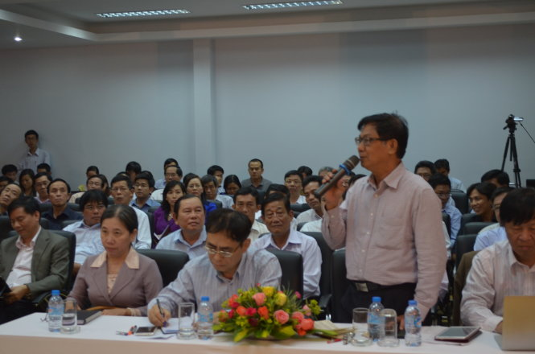
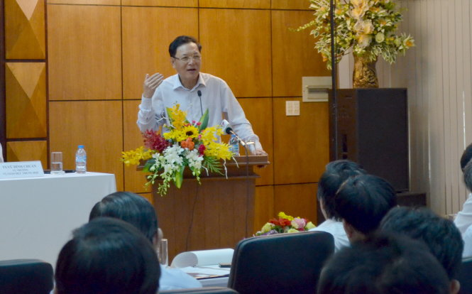

Bộ trưởng Bộ GĐ-ĐT chốt 10 điểm về kỳ thi quốc gia

Lần cập nhật cuối lúc Thứ hai, 26 Tháng 1 2015 17:07 Viết bởi Administrator Thứ hai, 26 Tháng 1 2015 16:59
Phát biểu tại “Tọa đàm Góp ý dự thảo quy chế thi THPT quốc gia 2015”, Bộ trưởng Bộ GD-ĐT Phạm Vũ Luận kết luận 10 nội dung liên quan đến kỳ thi.

TS Nguyễn Đức Nghĩa tại tọa đàm
Buổi “Tọa đàm Góp ý dự thảo quy chế thi THPT quốc gia 2015” diễn ra chiều 22-1 tại TP.HCM có lãnh đạo Bộ GD-ĐT, đại diện các trường ĐH, CĐ và nhiều Sở GD-ĐT khu vực phía Nam tham gia.
Mở đầu buổi tọa đàm, TS Nguyễn Đức Nghĩa - phó giám đốc ĐHQG TP.HCM - phát biểu các vấn đề liên quan đến chính sách và kỹ thuật.
|
10 kết luận của bộ trưởng Phạm Vũ Luận 1. Kỳ thi THPT quốc gia nằm trong 2 lộ trình đổi mới thi và kiểm tra, nhằm thay đổi cách dạy cách học, từng bước nâng cao chất lượng giáo dục. Kỳ thi tổ chức theo nguyên tắc lấy lợi ích lâu dài của học sinh làm mục tiêu chính. 2. Quy chế thi được giữ ổn định đến khi lớp học sinh học theo chương trình sách giáo khoa mới thi tốt nghiệp THPT. Năm 2016 có thể sẽ có thay đổi một vài chi tiết nhưng tổng thể sẽ giữ ổn định. 3. Đối với thang điểm 20, bản chất không thay đổi. Vì thế bộ sẽ tiếp thu và cân nhắc sử dụng lại thang điểm 10. 4. Đối với thí sinh tự do, thí sinh đăng ký dự thi ở đâu cũng được, miễn là thuận lợi cho các em, không bắt buộc theo nơi cư trú. Thí sinh đang học THPT đăng ký thi theo trường. 5. Cấu trúc đề thi bao gồm nhiều câu, trong đó có câu dễ và câu khó. Mô hình, cơ cấu câu hỏi trong đề thi giống các năm trước. 6. Về atlat địa lý, bộ sẽ cân nhắc cho thí sinh mang atlat vào phòng thi. 7.Tất cả các trường đều có quyền xét đợt 1, trường nào thiếu sẽ xét các đợt tiếp theo. Trường ĐH, CĐ tuyển vượt chỉ tiêu vài phần trăm có thể chấp nhận được. Nếu cố ý tuyển vượt chỉ tiêu sẽ bị xử lý. 8. Các trường ĐH xếp phòng và chuyển dữ liệu cho các sở GD-ĐT in giấy báo dự thi. 9. Thời gian công bố quy chế chính thức trong 10 ngày đầu của tháng 2-2015. 10. Cụm thi tỉnh và liên tỉnh: Chọn phương án tố chức thi như đã nêu trong quyết định 3538. Mỗi cụm thi liên tỉnh phải bao gồm ít nhất 2 tỉnh. Duy trì cụm thi địa phương để giúp thí sinh khó khăn và chỉ muốn xét tốt nghiệp THPT. Cụm thi này cũng do các trường ĐH chủ trì. |
Về mặt kỹ thuật, ban chỉ đạo thi cấp tỉnh, nếu cụm có nhiều tỉnh hoặc địa phương có nhiều cụm như TP.HCM ngoài lãnh đạo TP.HCM còn phải có đại diện các sở, các trường tổ chức cụm thi. Như vậy thì ban chỉ đạo cụm thi ở các thành phố lớn có quá phình to hay không. Vấn đề điều hành, tổ chức liệu có chồng chéo, phân công như thế nào?
Việc dồn phòng thi, đánh số báo danh thế nào, làm sao cho việc đánh số báo danh, dồn phòng thi (đối với các môn tự chọn) để giúp thí sinh và các trường thuận tiện hơn trong khâu tổ chức. Thẻ dự thi cũng phải quy định chi tiết hơn. Một vấn đề khác cần phải qui định rõ hơn: thí sinh tự do đăng ký dự thi ở đâu? Hiện có nhiều phát biểu khác nhau về vấn đề này.
Các vấn đề liên quan đến chính sách, TS Nghĩa cho rằng, theo dự thảo, ngoài ba môn bắt buộc,cần phải nói rõ môn tự chọn các em có thể đăng ký để xét tốt nghiệp ngay từ đầu chứ không phải đăng ký thi nhiều môn tự chọn khi có kết quả lấy môn cao nhất xét tốt nghiệp. Phải nói rõ vấn đề này để thí sinh không nhầm lẫn.
Việc mở rộng xét tuyển học bạ thì việc buộc thí sinh đã tốt nghiệp trung cấp, CĐ chưa đủ 36 tháng phải thi kỳ thi THPT quốc gia để lấy kết quả xét tuyển như vậy liệu có hợp lý hay không. Do đó cần phải cân nhắc kỹ vấn đề này để đảm bảo tính liên thông cho các em.
Đề xuất sử dụng thang điểm 10
Đại diện Sở GD-ĐT Đồng Nai đưa ra 3 đề xuất: nên duy trì thang điểm 10 bởi ở bậc phổ thông đang áp dụng thang điểm này. Thứ hai, hạn chót để thí sinh nộp hồ sơ ĐKDT theo quy chế là trước 1-4 nên giãn thời gian ra hết tháng 4.
"Về cụm thi, chúng tôi đề xuất duy trì hai cụm thi song song: cụm thi trong tỉnh và cụm thi liên tỉnh, cả hai loại cụm này đều do trường ĐH chủ trì", vị đại diện nói.
PGS-TS Đồng Văn Hướng - phó hiệu trưởng Trường ĐH Giao thông vận tải TP.HCM: hai cụm thi tỉnh và liên tỉnh đề thi như nhau và do các trường ĐH chủ trì như vậy thì không nên giữ cụm thi tỉnh làm gì, chỉ có cụm thi liên tỉnh.
Trong khi đó qui định về nhân sự của ban chỉ đạo và các thành phần liên quan của cụm thi khá chi tiết và như thế nhiều khả năng các trường chủ trì cụm thi sẽ không có đủ nhận sự để tham gia vào các ban này. Về vấn đề xét tuyển ĐH 20 ngày/đợt, cần xem xét lại liệu như vậy có gấp không.
Phó giám đốc Sở GD-ĐT Bà Rịa - Vũng Tàu cũng đề xuất: thời gian từ khi kết thúc việc đăng ký dự thi đến thời gian thi quá dài, như vậy trong thời gian nghỉ này học sinh làm gì. Các trường trong thời gian này là thời gian nghỉ hè.
"Do vậy tôi đề xuất bộ có văn bản chỉ đạo tổ chức cho học sinh ôn tập trong thời gian này. Dự thảo không cho thí sinh mang atlat địa lý vào phòng thi nên việc dạy phải theo hướng không được mang atlat. Trước giờ thí sinh được mang atlat địa lý vào phòng thi nên việc dạy và học theo hướng được mang atlat, giờ không được mang nên bộ phải thông báo sớm để thầy trò thay đổi phương pháp học cho phú hợp. Thang điểm 10 sẽ tạo sự đồng thuận nhiều hơn thang điểm 20 và học sinh cũng sẽ an tâm hơn. Bộ nên sớm công bố cấu trúc đề thi cho từng môn để học sinh và giáo viên yên tâm ôn tập", ông đại diện Bà Rịa Vũng Tàu nói.
Về vấn đề thang điểm, đại diện Sở GD-ĐT Đồng Tháp đề xuất giữ lại thang điểm 10, không nên sử dụng thang điểm 20 bởi học sinh vốn quen với thang điểm này.
Bày tỏ nhiều băn khoăn về kỳ thi THPT quốc gia 2015, thầy Trần Đức Huyên - phó hiệu trưởng Trường THPT chuyên Lê Hồng Phong (TP.HCM) cho rằng nên giữ lại thang điểm 10. Nếu muốn chi tiết ta có thể chia nhỏ thang điểm từng câu chi tiết hơn.
"Chúng tôi muốn biết chừng nào có quy chế chính thức? Nên có dự thảo quy chế THPT quốc gia 2016, 2017 để các trường và xã hội có thời gian góp ý và các trường cũng có thời gian chuẩn bị cách dạy và học cho học trò", thầy Huyên hỏi và đề xuất.
TS Trần Đình Lý - trưởng phòng đào tạo Trường ĐH Nông lâm TP.HCM nêu: "Việc sử dụng thang điểm 20, có nhiều ý kiến khác nhau. Việc chấm theo thang điểm 20 học sinh sẽ có lợi hơn nhưng giáo viên chấm sẽ mệt hơn và chi phí chấm thi có thể tăng lên. Do đó cần cân nhắc để chọn phương án hợp lý".
Theo PGS-TS Đỗ Văn Dũng - hiệu trưởng Trường ĐH Sư phạm kỹ thuật TP.HCM, việc chấm thi các môn tự luận có thể sẽ khó khăn. Nhiều trường chuyên về kỹ thuật, nay phải chấm các môn xã hội của cụm đó sẽ khó có đầy đủ đội ngũ giáo viên chấm cũng như khó đảm bảo công bằng.
"Do vậy, việc chấm thi nên giao cho các trường có thế mạnh về nhóm ngành đó chấm", PGS-TS Dũng nói.
Băn khoăn về cụm thi
Một vấn đề được nhiều đại biểu quan tâm đó là việc công bố cụm thi, thí sinh tỉnh nào dự thi ở cụm nào.
PGS-TS Đỗ Văn Xê - phó hiệu trưởng Trường ĐH Cần Thơ - cho biết trường chủ trì cụm thi với lượng thí sinh hơn 70.000. Tuy nhiên đến giờ vẫn chưa xác định được khu vực ĐBSCL có bao nhiêu cụm thi, thí sinh sẽ dự thi ở cụm nào. Đến nay thông tin này chưa có khiến các trường lúng túng trong khâu chuẩn bị.
Liên quan đến cụm thi, bà Mai Hồng Quỳ - hiệu trưởng Trường ĐH Luật TP.HCM góp ý thêm những vấn đề còn chưa yên tâm: sự khác nhau về giá trị giữa kỳ thi ở tỉnh và liên tỉnh như thế nào?
"Nếu không xác định rõ thì các em dự thi ở tỉnh hết chứ không vào các cụm thi liên tỉnh. Cần quy định rõ về mặt giá trị xét tuyển của hai kỳ thi này. Các thông tin về ưu tiên khu vực, đối tượng cần phải quy định hết sức rõ ràng để tránh các khiếu nại sau này", bà Quỳ nói.

Bộ trưởng Bộ GD-ĐT Phạm Vũ Luận
Bộ trưởng Phạm Vũ Luận: Cân nhắc sử dụng thang điểm 10
Kết thúc buổi tọa đàm, Bộ trưởng Bộ GD-ĐT Phạm Vũ Luận ghi nhận các ý kiến đóng góp về dự thảo quy chế kỳ thi THPT quốc gia 2015 để cân nhắc và hoàn thiện quy chế.
Việc đổi mới thi cử nằm trong hai lộ trình: lộ trình thay đổi kiểm tra đánh giá mà chúng ta đã triển khai vài năm nay và lộ trình thay đổi thi và tuyển sinh nhằm thay đổi cách dạy, cách học, nâng cao chất lượng giáo dục, đào tạo nguồn nhân lực.
Tất cả thay đổi đều lấy quyền lợi, lợi ích lâu dài căn bản của học sinh làm trung tâm, tiêu chí quan trọng nhất. Sự thay đổi như vậy sẽ có sự đảo lộn trong công việc của các sở ban ngành, của các trường.
Về các ý đề xuất tại buổi tọa đàm, bộ trưởng Phạm Vũ Luận cho rằng phương án này là "hình hài" của phương án cho đến khi chúng ta có học sinh lớp 12 học chương trình và sách giáo khoa mới. Như vậy, phương án này sẽ ổn định và nếu có thay đổi thì đến năm 2021 mới thay đổi. Năm 2016 có thể sẽ có thay đổi một vài chi tiết nhưng tổng thể sẽ giữ ổn định.
Đối với thang điểm 20, bản chất không thay đổi, chấm rồi sẽ quy đổi… và giáo viên chấm thi đúng là sẽ mệt hơn. Có lẽ bộ sẽ tiếp thu và sử dụng lại thang điểm 10 để khỏi có những băn khoăn, lo lắng từ thầy cô, học sinh và phụ huynh về vấn đề này.
Đối với thí sinh tự do, thí sinh đăng ký dự thi ở đâu cũng được miễn là thuận lợi cho các em chứ không nên bắt buộc theo nơi cư trú.
Về atlat địa lý, tuy không cho mang vào phòng thi nhưng những thông tin liên quan đến atlat sẽ được ghi trong đề thi chứ không bắt các em học thuộc lòng. Nhiều khả năng sẽ cho các em mang atlat vào phòng thi, khuyến khích khả năng tư duy phân tích chứ không bắt các em học thuộc lòng.
Bộ sẽ còn tiếp thu ý kiến, thảo luận trước khi đưa ra quy chế chính thức.
MINH GIẢNG (tuoitre.vn)
itnbk.edu.vn
- itnbk.edu.vn
- 22/07/2015 15:14 - Tra cứu điểm thi THPT Quốc gia năm 2015
- 02/04/2015 10:22 - Bộ Giáo dục công bố đề thi minh họa kỳ thi THPT qu…
- 27/02/2015 00:00 - 10 điểm nổi bật của quy chế kỳ thi THPT quốc gia
- 03/02/2015 07:03 - Băn khoăn với đổi mới giáo dục
- 31/01/2015 07:37 - Thứ trưởng Bộ GD-ĐT Nguyễn Vinh Hiển làm việ…
- itnbk.edu.vn
- 11/11/2014 07:22 - Ra quân dọn vệ sinh hưởng ứng ngày Đô thị Việt Nam
- 18/10/2014 07:08 - Sáng tạo trẻ chuyên Nguyễn Bỉnh Khiêm
- 25/09/2014 00:00 - Những người trẻ mê thiên văn học
- 15/09/2014 08:52 - Trao giải 5 đề tài đạt giải cuộc thi sáng tạo than…
- 30/08/2014 07:07 - Một lớp có 5 em học sinh đỗ thủ khoa đại học